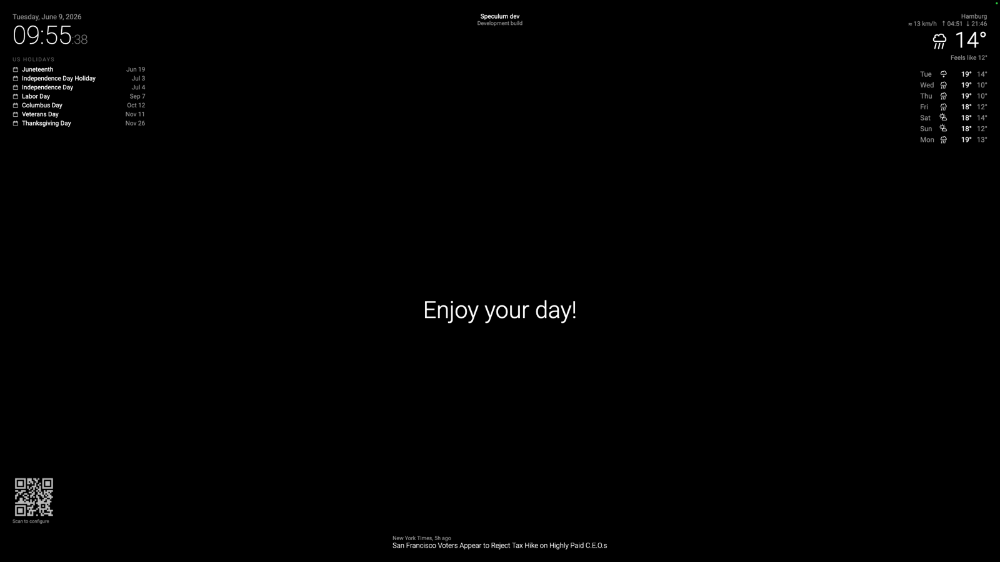
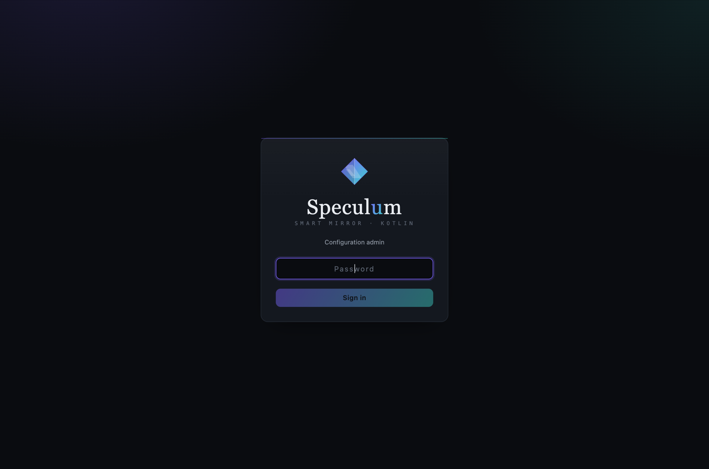
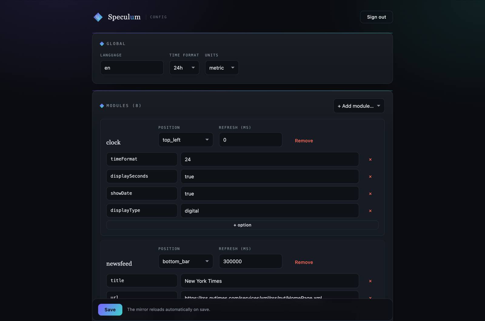

Showcase
What it looks like
Bright modules float on pure black and arrange themselves by screen region. Behind two-way glass, only the lit pixels show — the mirror does the rest.

Default modules
Each ships as its own Gradle subproject under modules/, built to a JAR in plugins/.
🕐 Clock
Live time and date with an optional analog face. Turn off seconds (displaySeconds=false) to recompose once a minute — the biggest CPU win on low-power devices.
modules/clock-module
🌤 Weather
Current conditions from the free Open-Meteo API. Monochrome vector glyphs drawn with Canvas so icons stay pure white.
modules/weather-module
📅 Weather forecast
Multi-day outlook with the same monochrome vector icon set. Ships in the weather JAR.
modules/weather-module
🗓 Calendar
Upcoming events pulled from ICS feeds, parsed dependency-free with a regex reader.
modules/calendar-module
💬 Compliments
Time-of-day greetings and date specials — the friendly MagicMirror staple.
modules/compliments-module
📰 Newsfeed
Rotating RSS/Atom headlines, regex-parsed. Optionally shows the source title.
modules/newsfeed-module
⬆️ Update notifier
A top-center banner when a newer GitHub release exists for the project.
modules/updatenotifier-module
📓 Example
A fully-commented reference module demonstrating config reading, lifecycle, notifications, state, and JAR packaging.
modules/example-module
Configure from any browser
The desktop app starts the config admin in-process, so the same package serves both the fullscreen mirror and a web UI on port 8080. Scan the on-screen QR code or open the address from any device on the network.


The mirror palette
Three brightness tiers on black — the entire visual language. Section headers follow MagicMirror style: UPPERCASE, letterSpacing = 2.sp, dimmed.
#FFFFFF — headlines, values
#999999 — labels
#666666 — secondary / headers
plugins/. Build one with the API Reference or rearrange the defaults in the web admin.